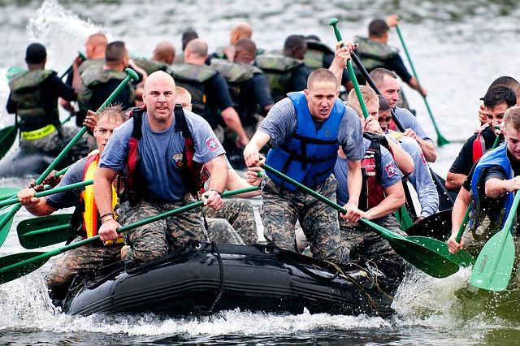

Our staff are responsible for the administrative, operational and logistical needs of its unit. It provides information between three departments. Specifically our main headquarter office, our resource center and our dispatch center. Most importantly our staff provides vital information to our first responders.
OUR STAFF
OUR FIRST RESPONSE TEAM
ADMINISTRATION

Our first responder team are likely to be among the first people to arrive at the scene to assist in any emergency. In the event of an accident, natural disaster, or terrorist attack. Our team has received training for this. We specialize and pride ourself on our Wilderness First Responders.

Meeting are set up on a timely basis in our calender. We are constantly making sure that we have enough resources for our animals and our staff and crew. We depend mostly on the donations we recieve from countless generous corporations and special individual donors.